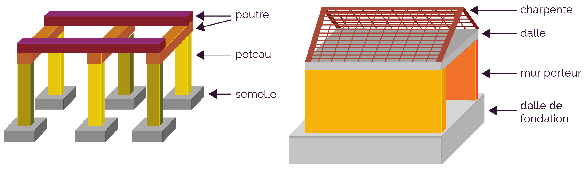
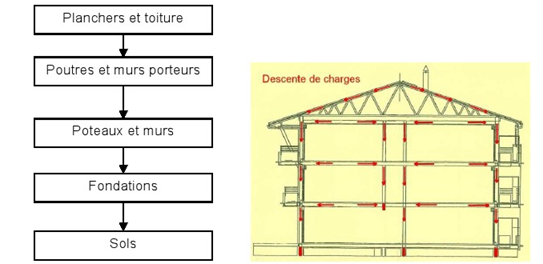
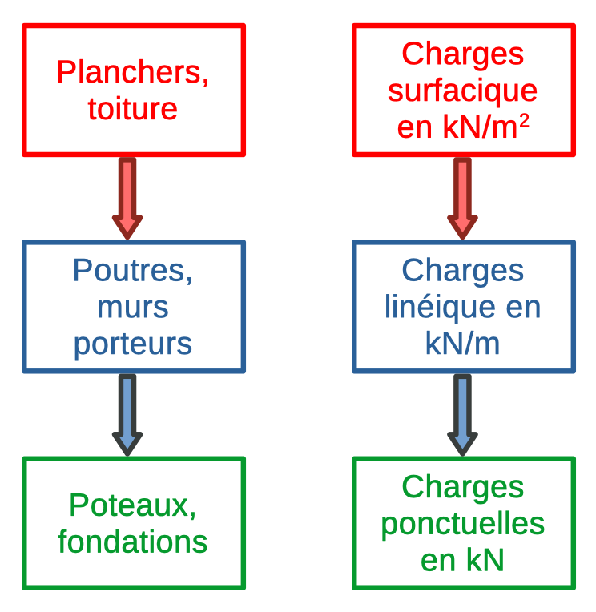
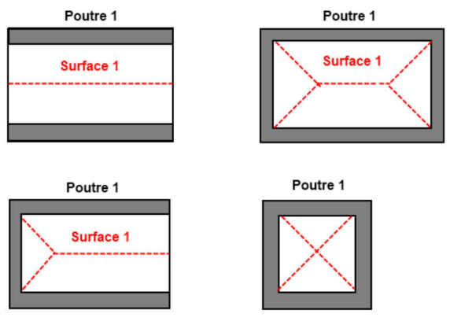
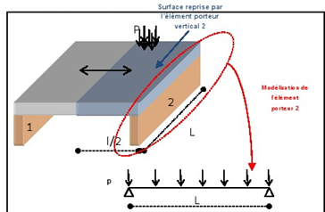

LA DESCENTE DE CHARGES
DÉFINITION
La descente de charges a pour objectif d'étudier la distribution des charges dans une structure.
Toute structure étant soumise à des charges gravitationnelles, le cheminement des charges dans une structure (par ex : bâtiment) s'effectue du niveau le plus haut (charpente) vers le niveau le plus bas (fondations).
On peut faire l'analogie de ce cheminement avec un réseau de tuyaux canalisant l'eau par gravitation.
Dans une structure de génie civil, le réseau de tuyaux correspond au système porteur de la structure et l'eau à l'ensemble des charges véhiculées par cette structure dite « porteuse ».
Ce cheminement est alors appelé « descente de charges ».
SYSTÈME PORTEUR D'UNE STRUCTURE
Dans un projet de Génie Civil, l'architecte dessine l'intérieur et l'extérieur d'un bâtiment et envoie les plans à un bureau d'études.
Le travail de ce bureau d'études est alors de définir à partir de ces plans, tous les éléments porteurs du bâtiment.

Il existe deux sortes d'éléments porteurs :
- les porteurs horizontaux (charpente, plancher ou dalle, poutre), situés dans un plan horizontal,
- les porteurs verticaux (poteaux, murs ou voiles), situés dans un plan vertical.
La structure porteuse doit donc être définie suivant le modèle de la théorie des poutres, avant l'étude de la descente de charges.
LE PRINCIPE
La descente des charges consiste donc à s'assurer du bon cheminement des charges dans notre structure porteuse du niveau le plus haut vers le niveau le plus bas.
Lors de cette étude, on détermine les charges qui s'appliquent sur chaque élément porteur de la structure pour le dimensionner et pour amener ces charges jusqu'au sol, élément porteur de notre structure.

LES CHARGES
Les charges permanentes
Elles ont pour symbole le terme G.
Elles résultent du poids propre des éléments porteurs et non porteurs.
Elles sont déterminées à partir:
- du poids volumique des matériaux, exprimé en kN/m\(^{3}\)
- ou du poids surfacique des éléments, exprimé en kN/m\(^{2}\)
Les charges variables
Elles ont pour symbole le terme Q.
Elles comprennent les charges d'exploitation et les charges climatiques.
-
Les charges d'exploitation :
Elles dépendent de l'utilisation et de l'exploitation de la structure en prenant en compte:- L'usage normal des occupants
- Le mobilier et tout objet dit « mobile » (par exemple, les cloisons)
- Les véhicules...
Dans le cas de structures de Génie Civil, ces charges sont définies forfaitairement et réglementairement par l'Eurocode 1 en fonction de l'usage spécifique du bâtiment.
Remarque : Dans le cas d'un bâtiment d'habitation à grand nombre de niveaux (>2), on peut considérer que l'occupation des locaux n'est pas maximale simultanément à tous les niveaux. On peut donc appliquer un coefficient de réduction, à la charge d'exploitation totale.
-
Les charges climatiques :
Ce sont des sollicitations dues à l'action du vent et de la neige.- La neige :
Elle a pour symbole S et s'exprime en kN/m2.
Elle est calculée à partir de l'Eurocode 1 (partie 1.3).
La neige est une action statique, toujours dirigée verticalement et vers le bas. - Le vent : Il a pour symbole W et est une action complexe car elle peut avoir des effets statiques (dépression et surpression sur les parois) et dynamiques (phénomène de résonance) sur une structure. Il est calculé à partir de l'Eurocode 1 (partie 1.4).
Remarque: Dans le cas de structure courante de formes simples. la prise en compte du vent se limite à une étude qualitative du contreventement assuré par:
- La présence de cages d'escalier
- La présence de murs de refends dans les directions orthogonales - La neige :
Elle a pour symbole S et s'exprime en kN/m2.
Autres types de charges
-
Les charges thermiques : Une variation de la température entraîne systématiquement une dilatation (ou contraction) des matériaux. Le changement de longueur d'une poutre de longueur L en fonction de la température est donné par la relation :
AL = a.L.AT avec :
- α (alpha): le coefficient de dilatation thermique linéaire du matériau
- L : la longueur initiale
- ΔT : l'écart de températureIl sera important de tenir compte de ce phénomène dans une structure.
-
Les charges sismiques : Un séisme provoque des vibrations qui se propagent à travers les différentes couches de sol. Le sol subit donc des accélérations qui se traduisent par des efforts horizontaux.
-
Vibrations dues aux machines tournantes : Les ventilateurs comme d'autres types de machines tournantes génèrent non seulement du bruit issu de l'air, mais aussi des vibrations. Celles-ci peuvent conduire à des dégâts au niveau de la structure suite à la fatigue du matériau. Pour absorber ces vibrations, des amortisseurs sont prévus pour convenir aux poids et aux fréquences évoqués.
RÉPARTITION DES CHARGES DANS UNE STRUCTURE
Les charges extérieures à la structure (charge d'exploitation, charges climatiques) sont des charges surfaciques, appliquées essentiellement (hormis le vent) sur des surfaces horizontales (planchers, toiture).
Une descente de charge correspond à la transmission des charges appliquées à la structure vers les fondations : il s'agit donc de passer de ces charges surfaciques à des charges linéiques, jusqu'à des charges ponctuelles.

Principe de répartition des charges de plancher
Les surfaces horizontales (plancher, toiture) d'une structure doivent reposer sur des appuis (poutres ou murs porteurs appelés aussi voiles) appelés aussi éléments porteurs.
Quel que soit le matériau de construction, pour déterminer les charges transmises par les dalles aux poutres ou aux voiles, et pour tout type de charges G, Q ou S, il faut se servir de la surface de plancher reprise par ces éléments porteurs. Ces surfaces de planchers sont appelées surfaces d'influence et notées SP.
-
Le plancher porte dans un seul sens
Le report des charges ne se fait que sur 2 côtés. La surface du plancher est donc divisée en deux parties égales parallèlement aux éléments porteurs (en général dans le sens de la plus petite portée). -
Le plancher porte dans les 2 sens
Le report des charges se fait sur les 4 côtés du plancher suivant des lignes de rupture à 45° par rapport aux angles de la dalle pour un angle droit. Cette inclinaison à 45° conduit à des découpes en triangles et trapèzes isocèles. De plus, si l'angle que font les éléments porteurs de la dalle n'est pas un angle droit, la répartition n'est plus à 45° mais se fait suivant la bissectrice de l'angle

Principe de répartition des charges de poutre
Une poutre est un élément porteur horizontal. Elle repose sur des éléments porteurs verticaux qui peuvent être de nature différente :
- Poteau
- voile
